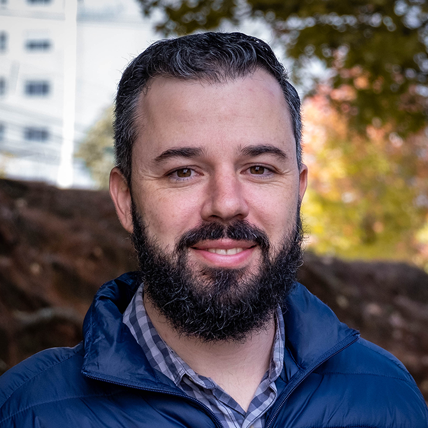

Adson Mettler do Nascimento | WDD 130
Hello, welcome to my home page. I feel happy to have you here. Let me introduce myself to you. I live in Toronto, Canada, with my wife and my five years old daughter. I am a web desinger aimed at marketing campaign projects. I have worked with sales, customer services and marketing since 2013 in several companies, having clients from Canada, the United States, Poland, Brazil, and others. If you want to know more about the projects I have being involved, please access my portfolio.